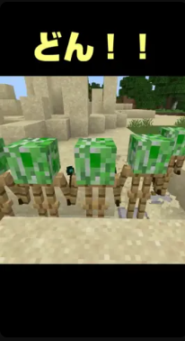

防具立てで自動整地する「整地君」を作ってみた!!
防具立てを使った、ちょっと面白い自動整地装置を作ってみました！
名前は「整地君」！どんどん前に進みながら、地面をキレイに整地していきます✨
ゴールに到達すると、ぐるぐる回転しながら空へ飛んでいくかわいい演出つきです！
▶️ 紹介動画はこちら
🔧 使い方
ワールドにコマンドをセットして、整地したい方向に「整地君」を向けてスタート！
地面を問わず、サクサク整地してくれます。
ゴール地点には「ダイヤモンドブロック」を置いてください。
整地君がそこに到達すると、整地完了演出が始まります♪
📦 コマンドはこちら♪
/execute as @e[type=armor_stand,name=seiti] at @s unless block ^^-1^1 diamond_block run tp @s ^^^0.1
/execute as @e[type=armor_stand,name=seiti] at @s unless block ^^-1^1 diamond_block run fill ^^^1 ^^10^1 air destroy
/execute as @e[type=armor_stand,name=seiti] at @s if block ^^-1^1 diamond_block run kill @s
/execute as @e[type=armor_stand,name=seiti] at @s if block ^^-1^1 diamond_block run summon armor_stand goal
/execute as @e[type=armor_stand,name=goal] at @s run tp @s ~~~~30~
/execute as @e[type=armor_stand,name=goal] at @s run tp @s ~~0.1~
/execute as @e[type=armor_stand,name=goal] at @s run kill @s